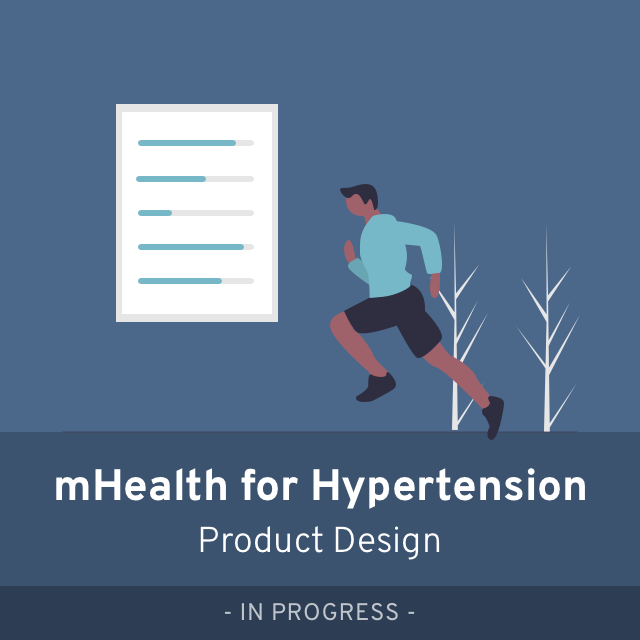
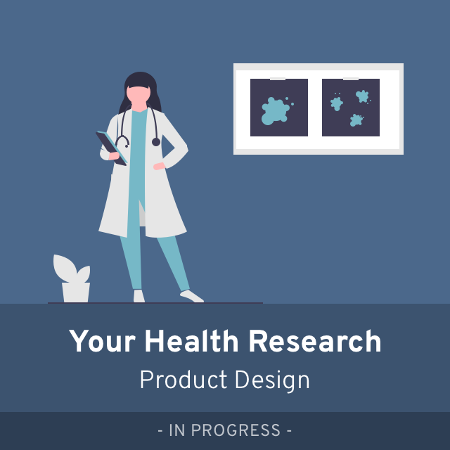
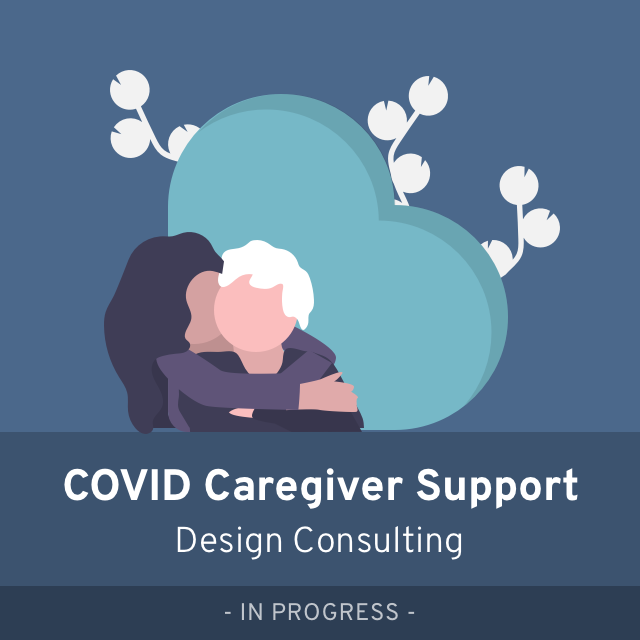
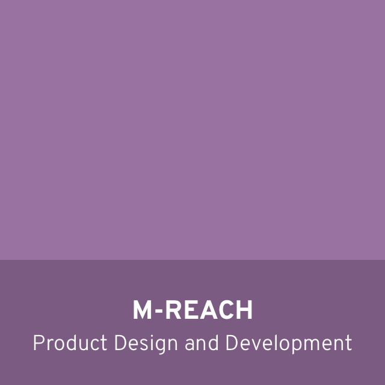
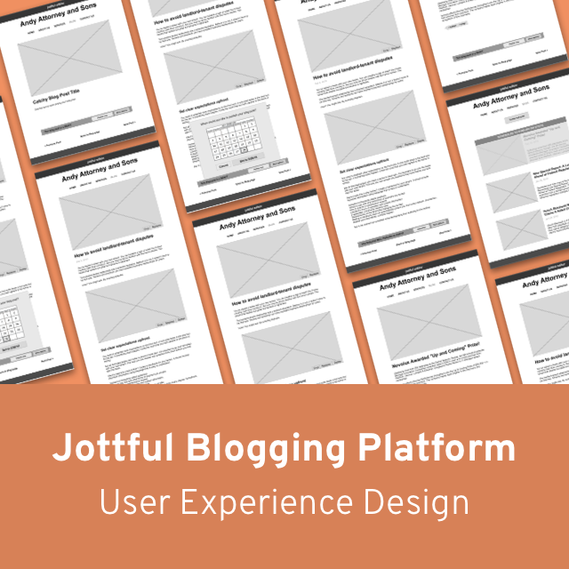
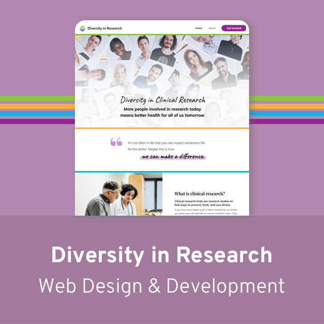
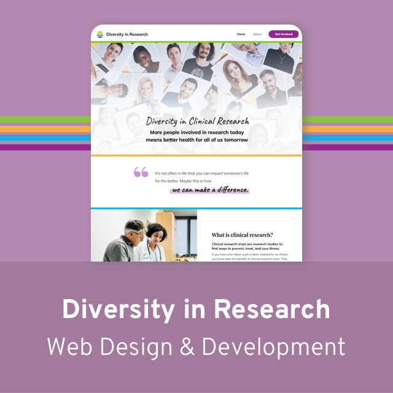
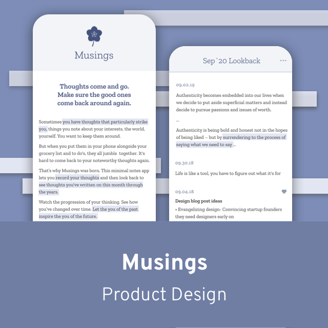
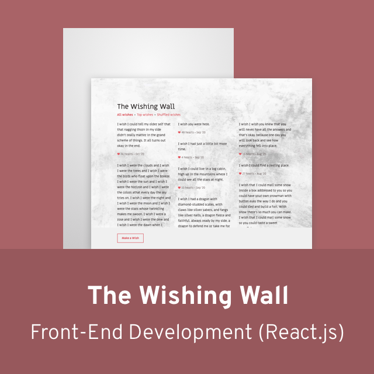

Hi there! I'm Linde.
I’m a Product Designer at Michigan Medicine.
My Design & Innovation team provides strategy and design services for research groups across the University of Michigan who want to create and study novel health interventions. We also take on projects to enhance health research infrastructure, making it easier to get health discoveries from the research lab to the patient bedside.
In my small (but mighty!) design team, I'm a product generalist. I like wearing many hats, rounding out my design expertise with business strategy and technology skills.
Take a look at what I've been working on lately.
↓
Current Projects
Problem spaces that are actively kicking around inside my brain.
  Past Work
Case studies that demonstrate the various facets of my design methods and mindsets.
  

Personal Projects
Side projects that help me learn new skills and explore new spaces.
 